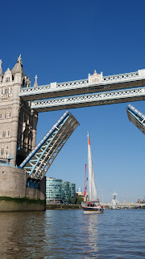
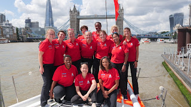
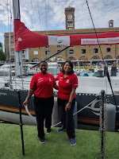
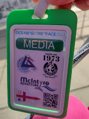
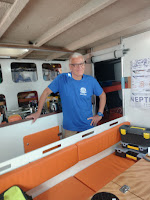
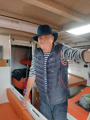
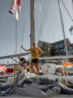

 |
| The only UK entry in the 2023 OCR |
{kind=link}
It started just three weeks ago. I’d heard that Tracy Edwards’s iconic yacht Maiden was lying in St Katherine’s Dock in London and would be open to the public on Saturday afternoon. Then I heard that I could buy a ticket just a couple of days earlier and attend an evening event to meet the crew. This had the great merit of offering pleasure and research… would Tracy Edwards herself be there? ‘Marketing’ isn’t keen on Lionesses of the Sea as the title for my forthcoming book about c20th women sailors and I can’t be bothered to argue the point just now. But Tracy would make a great lioness.
She was certainly there. She opened the gate to let us all troop in. An erect, petite figure in an anorak. Not playing the celebrity hostess; the gate needed opening. She opened it.
Suddenly there, next to Maiden, able to touch her, potentially go on board, I felt overcome with emotion. This yacht, which had raced around the world with the first all-female crew in 1989-90. This yacht, which had done so much to change the perception of women in sailing.
Watch the film if you’ve
not already done so. I defy you not to feel a lump in your throat when Maiden returns to Southampton Water with Tracy dejected at what she perceives as her mistakes, her failure – and then the boats come streaming out to meet them; one hundred and fifty thousand people begin to cheer and the crew of Maiden realise that there are other ways of winning than coming in first.
They achieved so much in 1989/90 – but is it still not enough? Later,
when I asked Tracy why I’d not read any articles about Maiden’s status as the only UK entry in this genuinely thrilling 2023 race, her answer couldn’t have
been clearer: ‘Because the British media don’t give a sh*t!’ There’d been an item on BBC Today programme
but the only newspaper that had shown interest was Agence France-Presse. Ocean
sailing still creates excitement in France – in Britain, apparently not. At
least not an all-women team. ‘The newspapers would be here if I
were Ben Ainslie,’ Tracy said. ‘Yes I’m angry, but it’s not about that. I’m
angry about the women who are denied education, about the women who are
exploited, assaulted, murdered.’ Maiden’s mission these days is women’s
education: Educate a girl and you change the world.’ She advised me to read Hags by Victoria
Smith and I ordered it as soon as I got home (only to find that Francis had bought
a copy on publication).
 |
| Maiden's crew 2023 |
{kind=link}
But my current emotion isn’t anger. It’s 20th century gratitude and as that evening developed it became utter 21st century admiration. The first young woman who stepped forward to meet me was Vuyisile Jaca (25). Born in a South African township, Vuyi lost both her parents when she was a child. She moved to Durban to live with relatives and came in contact with the sea. But sailing was for White people, the sea was alien, township girls don’t swim. With encouragement from her school she came in contact with Sail Africa and for the first time stepped on a boat. She loved it and begged to be allowed to come again and perhaps go out to sea? The organisers were sceptical. ‘Most girls don’t come back,’ they said.
 |
| Vuyi & Payal |
{kind=link}
But Vuyi is not ‘most girls’, she is an extraordinarily talented and determined sailor. She has earned her day skipper completing the tough Vasco da Gama race, she has learned to swim well enough to become an instructor, if Maiden’s race is successful she will become the first Black woman to race around the world. She is sensitive, warm and charming. She could see I was uncertain and reached out in friendship. Payal Gupta, an older woman (though that only means late 30s) joined her in taking care of me. They understood that I felt emotional They said they had felt something similar when Tower Bridge had opened for Maiden to come through. Payal is a Lieutenant in the Indian navy. She joined because she wanted to be part of a service that existed for others. Entry is very limited. Payal took the examinations six times before she was successful. She’s a quiet person with obvious strength and dignity. I’d like to sail with Payal.
As I relaxed and enjoyed the evening, I had more
conversations with crew members - Ami the engineer, Kate, the doctor. Heather, the skipper is a 26-year-old from
Otley in Yorkshire; Rachel, first mate, is a vet in her thirties. The others
are from UK, USA, Antigua, Italy, India, Puerto Rico. Najiba Noori, who will be
responsible for video-recording the trip is from Afghanistan. How many Afghan
women have raced around the world? I hear you ask. You won’t need me to give
you that answer.
Inspirational is an overused word but I have to tell you that I left St Katherine’s Dock that evening feeling inspired. Not to be the first stocky nearly-70-year-old from High Easter to attempt a circumnavigation under ocean racing rules, but to see what I could to tell other people about this event.
It’s called the Ocean Globe Race (OCR) intended to recreate the conditions of the
first Whitbread Round the World race in 1973. No internet, no GPS, no mobile
phones or computers, no Kevlar sails or carbon fibre masts. This has to be
sailed in ‘traditional’ yachts – not high-tech racing machines. It’s not a
criticism of innovation in sailing but a recognition that highly advanced boats
must be sailed by highly skilled professionals. In those races there's no longer any room for
the talented amateur fulfilling a dream or trying to raise awareness of some
cause that’s bigger than them. The OGR, however, demands that every team must include at
least one woman and someone under 24. No team is allowed more than 3
professionals; several include husbands, wives, adult children, other family
members. They all know that its going to
be tough, especially as they round Cape Horn, but for most people that is the
biggest attraction.
Maiden will be highlighting a different factor hindering
girls education in every leg of the race. In leg one it’s forced marriage. You
can read more about it (and donate) here They also, unsurprisingly, want to WIN the
race. It’s never been won by a UK boat; it’s never been won by a female skipper
or an all-woman team.
 |
| My Press pass! |
{kind=link}
I produce the book pages for Yachting Monthly
magazine. The magazine is not over-staffed so my editor agreed (perhaps with some surprise) that
I should be allowed to go to Southampton where the boats are gathering,
interview people, take (or find) photos, attend media events, go out in a Press
Boat to watch the start – act indeed like proper journalist. Yes, Imposter
Syndrome will be a problem but I’m not letting it get to me. (You'll understand why later.)
Armed with my press pass – and admirably clear arrangements
made by the OCR PR manager – I spent Tuesday talking to interesting,
enthusiastic, committed people. And I found more stories. So many stories…such inspiration.
 |
| Bertrand |
{kind=link}
 |
| Tan |
{kind=link}
It’s getting late so I’ll only mention two. Neptune, a French boat owned and skippered by a surgeon Tanneguy Raffrey, includes Bertrand Delhom a man with Parkinson’s Disease. Tan has modified aspects of the yacht to make it easier for Bertrand to get around safely. He and Bertrand have already worked out an exercise routine which has helped Bertrand improve both his physical and his psychological strength. He has successfully reduced his dependence on morphine for a previous injury. Bertrand has endured a lifetime of medical misfortune. He wants to show people that even serious illness or disability need not rule out adventure. Tan sees that we live in an aging society where people may live with terminal conditions. He wants to offer hope that they can live well – and devise some practical strategies for doing so.
Emma, on board Godspeed, is the single British woman with in a crew of US military veterans, a charity sailing to raise awareness of PTSD. Before I met Emma, I felt perturbed by this statistic. I needn’t have been. Emma has also served in both the RN and RAF. She has been to Afghanistan with a combat group. She isn’t an experienced sailor but says that joining this crew made her feel immediately at home – back in the ‘service family’ again. They ‘have each other’s backs’; know how to live together in cramped and stressful conditions. Already they have developed a survival mantra, ready for gales, crises, high seas. ‘Is anyone shooting at us?’ they ask each other. ‘No? then there’s nothing to worry about.'’
 |
| Emma |
{kind=link}
I think I’m going to use that one next time I feel upset or
stressed. ‘Is there anyone shooting at me?’ ‘No?’ ‘Then there’s nothing to
worry about.’
Even now when I’m running out of time to finish this piece.
Even on Sunday when I’ll be in a Press boat reporting the race start, with
people using cameras with enormous lenses, talking into voice recorders or
scribbling in shorthand. Is anyone shooting at me?
Nothing to worry about.
Plenty to admire.